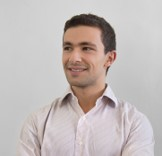
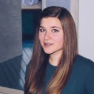
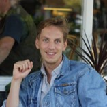
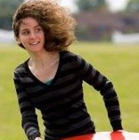
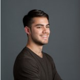
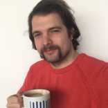
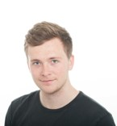
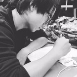

The current first-year PhD students:

Michael Arbel (Gatsby)
Before joining the Gatsby PhD program, I was a computer vision engineer at Chronocam in Paris where I developed Tracking Algorithms
for event based sensors. Before that, I did a Master in Machine Learning at Ecole Normale Supérieure and my Bachelor at Ecole
Polytechnique majoring in Applied Mathematics. During my previous research experience, I had the opportunity to explore diverse topics
ranging form stochastic calculus to deep learning. I hope to continue working on machine learning and exploring its intersections with
Neuroscience. I also enjoy singing and going to the opera when I have time.

Lea Duncker (Gatsby)
I have an undergraduate degree in Natural Sciences and a master’s degree in Computational Statistics and Machine Learning from UCL. Before joining the Gatsby Unit, I spent a year doing research at the Princeton Neuroscience Institute, where I worked with Jonathan Pillow. I’m interested in problems that arise at the intersection of neuroscience and probabilistic machine learning, including data analytic problems such as time series and point process models of high dimensional neural data, as well as the development of interpretable models that allow gaining insights into the computations neural ensembles perform.

Jesse Geerts (SWC)
Before joining the SWC, I completed a master's in Brain and Mind Sciences at UCL, Université Pierre et Marie Curie and Ecole Normale
Supérieure, and a degree in Neuroscience at the University of Amsterdam. I am fascinated by the way we represent the outside world in the
brain, and I hope to learn the experimental and theoretical techniques required to investigate this during my PhD - so far, the SWC seems like
the perfect place. Outside neuroscience, I enjoy music, travelling and discovering what London has to offer.

Kirsty McNaught (Gatsby)
I originally studied Engineering Science at Oxford University, with a focus in biomedical engineering, machine learning and computer vision. I then worked for several years in various startup companies in computer vision fields (stereo imaging, laser mapping and SLAM) before deciding to return to academia to study a PhD at the Gatsby. My research interests lie in the overlap between neuroscience and machine learning. I'm very interested in vision, particularly colour perception and visual attention. Outside of the PhD, I also have a strong interest in assistive technology, and work with the charity SpecialEffect to help disabled users access computer games, particularly using eye-tracking.

Jorge Menendez (Gatsby)
I'm a graduate student at the Gatsby Computational Neursocience Unit
where I am working on constructing and understanding functional spiking
networks under biological constraints. I did my undergraduate degree at
the Johns Hopkins University Department of Cognitive Science, where I
did a lot of research on visual cognition before falling down the rabbit
hole of biology and arriving at the belief that neural computation needs
to be understood at the level of neural circuitry. That's when I came to
UCL to do an MRes in Computational Biology with CoMPLEX. Working jointly with
Peter Latham and Adam Kampff, my PhD is about trying to formalize
network architectures that might allow biologically realistic spiking
neurons to perform useful computations. My hope is that these
theoretical results may yield predictions we can test in real (rodent)
brains. When I'm not doing neuroscience, I'm usually thinking about it.
And I kinda like music too. Check out my research and blog here.

Stephen Lenzi (SWC)
My background is in calcium imaging and electrophysiology
in olfactory and visual systems. So far I’ve really enjoyed the opportunity to diversify and
deepen my knowledge and practical skills and build experimental systems from the ground up,
which we keep track of in our blog. When I’m not poking brains or coding I like to
play music and go swimming.

Matthew Phillips (SWC)
I joined the SWC PhD after completing the 4 year MSci Neuroscience program at UCL. Previously I’ve used electrophysiology,
calcium imaging and behavioural assays to investigate how neural circuit structure and function leads to behaviour. My previous
labs encouraged the combination of experimental and theoretical work (namely Michael Hausser’s lab at UCL and Nelson Spruston’s
lab at Janelia Research Campus), and I hope to continue working close to the intersection between experiment and theory in my PhD.
Outside science, I enjoy getting in twitter fights (@Phillips_M_G), and play rugby
and cricket in my spare time.

Wenkai Xu (Gatsby)
Coming from a mathematics and statistics background, I was fascinated by the combination of statistical learning theory with
the neurodata analysis. Thus I would like to build my knowledge on neuroscience and research on integrating statistical learning
methods with biological evidence to further understand learning process. My current focus is on applying kernel methods for regression
and testing problems, which could be extended to improve learning representations. Outside academics, I was a piano player and I
enjoy playing golf as well as tennis.